7. プログラムの動き
システムは、Web画面、Backend、PostgreSQL、Ollamaで構成する。画面の操作から、データの保存と回答までの流れを順に確認する。
7.1 各部分の役割
| 部分 | 担当する仕事 | 場所 |
|---|---|---|
| 管理画面 | 入力フォーム・一覧の表示、操作状態の保持、API呼出し。1画面だけで使う処理はその画面内に置く。 | frontend/src/pages/admin |
| ウィジェット | サイト上で質問を送信し、会話を表示する。 | frontend/src/widget |
| APIルート | HTTPのURLとMethodに応じて処理を振り分ける。 | Backendのroute / routesファイル |
| Controller | HTTPの入力を確認し、業務処理を呼び出して成功・エラーを返す。 | controllerファイル |
| Service | FAQの選択、資料の取込、回答などの業務処理を実行する。 | serviceファイル |
| 会話のDB操作 | 会話ID、メッセージ、サイト設定、検索履歴を読み書きする。 | chat/chat.repository.ts |
| AI呼出し | Ollamaへ要求を送り、同時実行数と待ち時間を制限する。 | ai/ollama.service.ts |
7.2 FAQの管理フロー

スタッフが作成・変更・Excel取込したFAQは承認待ちで保存し、管理者が承認すると公開する。管理者は個別FAQを下書きとして保存できる。取込ファイルが却下されている間は所属FAQをロックし、FAQ一括取込で再承認すると利用できる。
7.3 資料の取込フロー

資料を読み取り、文章を分割して意味を表す数値を作成した後に保存する。失敗時は資料を途中まで保存しない。保存が成功しても、承認の条件を満たしてから回答に使用する。
7.4 質問への回答フロー

1件のFAQに直接一致する場合は、AIが書き直さず登録済みの回答を返す。適切なFAQを選べなければ資料を検索し、AIが回答を作成する。根拠がなければ、質問の補足や問い合わせを案内する。
7.5 AIの同時実行数と待ち時間
Backendは同時にOllamaを呼べる件数を制限する。上限に達した場合は処理中と通知する。時間切れやチャットの切断時には呼出しを中止し、実行枠を戻す。設定と既定値は第09章、利用者への表示は第10章を参照。